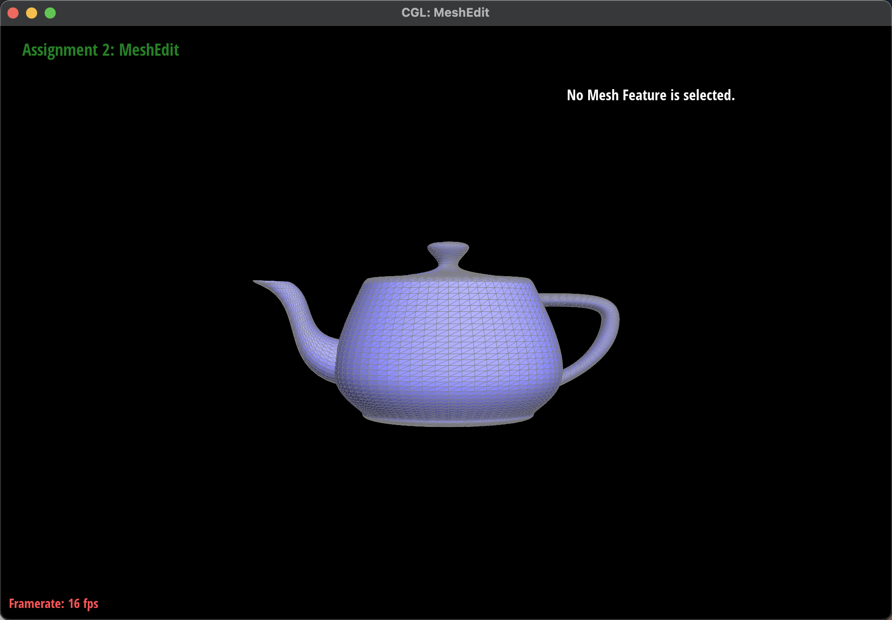

Overview
In this project we first implemented bezier curves and surfaces, one of the geometry bedrocks of computer graphics. Then we used half-edge data structure to represent mesh grid. Share your thoughts on what interesting things you've learned from completing the project.
Section I: Bezier Curves and Surfaces
Part 1: Bezier curves with 1D de Casteljau subdivision
De Casteljau's algorithm is a recursive approach to use linear interpolation to evaluate points on a Bezier curve. In our implementation, we called lerp function on every neighboring pair of control points, making the total number of control points to decrease by one. With this fundamental evaluateStep function, we called it repeatedly until there is only one control point. Such a point is what we expected to be on the curve.
|
|

|
Part 2: Bezier surfaces with separable 1D de Casteljau subdivision
De Casteljau's algorithm can be extend to a 2D patch circumstance. We first used the 1D evaluateStep function to evaluate every row of the n by n control points grid with a fixed linear interpolation parameter of u. After above step, we would get a set of points which are located on the original row bezier curves respectively. We view this group of points as new control points. Finally, we perform de Casteljau's algorithm on these new control points with a linear interpolation parameter of v. In this dynamic process of altering u and v, the set of possible final point locations is the patch, or 2D Bezier surface we want.
|

|
Section II: Sampling
Part 3: Average normals for half-edge meshes
To calculate the area weighted normal vector at a given vertex, we have to loop through all the neighboring faces and calculate their area and normal vectors. This divide the problem into two subparts:
First, we need to loop through the faces (and their vertices). To do so, we use the twin iterator defined in every half-edge. We notice that current->twin->next is the next starting half-edge of a new face. Therefore, we can use a do-while loop to iterate through all the faces adjacent to the given vertex v.
Second, we need to calculate the area of the face triangle at a given starting half-edge. We use the half-edge that originates from the given vertex and call next three times to get three half-edges in a counter-clockwise fashion. Then, the three vertices we want is just the source points of these three half-edges. Once we have the coordinates of three source points, we calculate the cross product of the two vectors they form. The outer product's length is the area of the parallelogram, which is proportional to the area of the face triangle. Thus, we can simply accumulate these cross products and normalize them in the last step.
|
|
|
Part 4: Half-edge flip
Part 5: Half-edge split
Part 6: Loop subdivision for mesh upsampling
Section III: Optional Extra Credit
If you are not participating in the optional mesh competition, don't worry about this section!
Part 7: Design your own mesh!

|

|

|

|